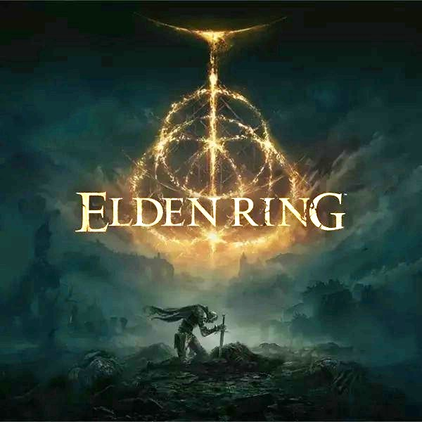

- Year: 2022
- Genre: Action RPG, Open World
- Developer: FromSoftware
- Platforms: PC, PlayStation 4, PlayStation 5, Xbox One, Xbox Series X/S
- Awards: Game of the Year (GOTY) 2022
About the Game
Elden Ring is an action RPG developed by FromSoftware in collaboration with George R.R. Martin. Set in a massive, lore-rich world, players must explore, battle formidable foes, and restore the Elden Ring.
Key Features
- Open World: A vast, interconnected world filled with secrets and challenges.
- Combat System: Deep and rewarding combat with a variety of weapons and abilities.
- Customization: Extensive character customization and build options.
- Lore and Story: A rich narrative crafted by George R.R. Martin and FromSoftware.
- Multiplayer: Cooperative and competitive multiplayer modes.
Why It Won GOTY 2022
- Revolutionary Open World: Elden Ring redefined open-world design with its freedom and depth.
- Critical Acclaim: The game received universal praise from critics and players.
- Cultural Impact: Elden Ring became a cultural phenomenon, inspiring countless discussions and theories.
- Technical Achievement: The game's visuals, world design, and performance were widely acclaimed.
- Legacy: Elden Ring is considered one of the greatest games of all time.